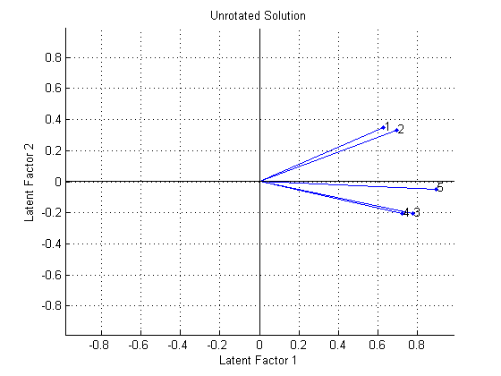
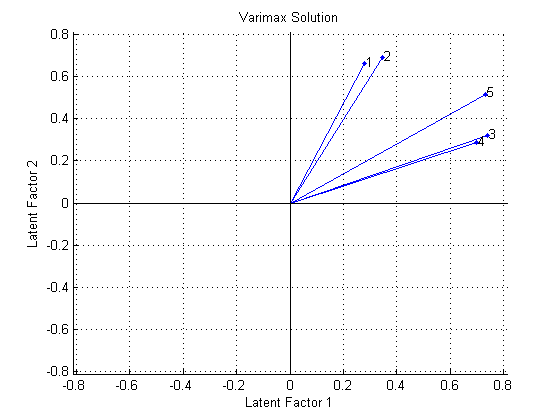
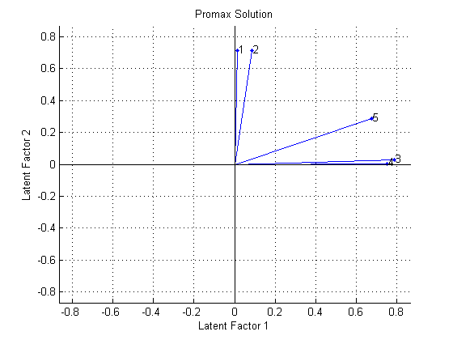
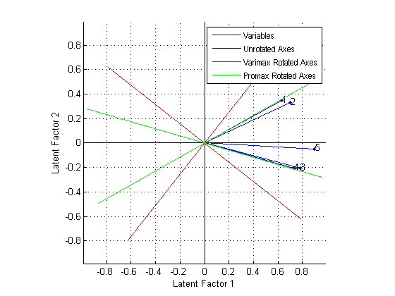
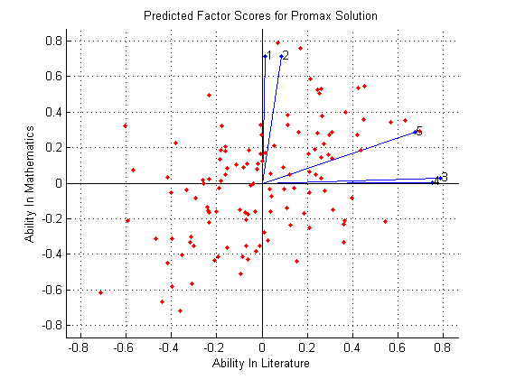

因子分析
多変量データはしばしば多くの測定された変数を含み、場合によっては、それらの変数が "重なる" (変数のグループが依存するという意味で) ことがあります。たとえば、十種競技では、各競技者が 10 の競技を競いますが、その中のいくつかは、"スピード" 競技と見なせるものがある一方、 他の競技は、"強さ" を競う競技などと見なすことができます。したがって、競技者の 10 の競技の得点を、運動能力の 3 つまたは 4 つのタイプのより小さいセットに大きく依存しているものと考えることができます。
因子分析は、この種の相互依存だけを推定するために、多変量データをモデルで近似する方法です。このデモでは、Statistics Toolbox™ を使用して因子分析を実行する方法を示します。
目次
因子分析モデル
因子分析モデルでは、測定された変数は、少数の観測されない (潜在的な) 因子に依存します。各因子は、いくつかの変数に共通して影響することがあるため、「共通因子」として知られています。各変数は、共通因子の線形結合に依存すると仮定されます。また、係数は「負荷」として知られています。測定された各変数には、独立したランダムな変動による成分も含まれます。これは、1 つの変数に固有であるという理由から、「独自因子の分散」として知られています。
特に、因子分析は、データの共分散行列が次の形であると想定します。
SigmaX = Lambda*Lambda' + Psi
ここで、Lambda は負荷の行列であり、対角行列 Psi の要素は独自因子の分散です。関数 factoran は、最大尤度を使用して因子分析モデルを近似します。
例: 試験の成績に影響する共通因子の特定
120 人の生徒がそれぞれ 5 つの試験を受けました。最初の 2 つの試験は数学、次の 2 つは文学、最後は総合試験です。生徒の 5 段階評価を関連付けることは適切であると思われます。生徒の成績はさまざまで、両科目で優秀な生徒もいれば、一方の科目でのみ優秀な生徒もいます。この分析の目的は、5 つの試験での生徒の成績がほぼ、2 種類の能力によってのみ決まることを示す定量的な証拠が存在するかどうかを判断することです。
まずデータを読み込み、次に factoran を呼び出し、単一の共通因子によるモデルの近似を要求します。
load examgrades
[Loadings1,specVar1,T,stats] = factoran(grades,1);
factoran が返す引数の最初の 2 つは、推定された負荷と推定された独自因子の分散です。推定された負荷から見て取れるように、このモデルの 1 つの共通因子が 5 つの変数すべてに対して大きい正の重み与えていますが、最大の重みは 5 番目の総合試験に対するものです。
Loadings1
Loadings1 =
0.6021
0.6686
0.7704
0.7204
0.9153
この近似の 1 つの解釈は、生徒が "総合的能力" (この尺度として最適なのが総合試験) の観点で評価されているというものです。より科目に特化した試験での生徒の成績は、総合的能力によって決まる可能性がありますが、生徒がその科目が得意であるかどうかによっても左右されます。このことは、最初の 4 つの試験に対して負荷が低いことの理由になり得ます。
推定された独自因子の分散から見て取れるように、特定の試験での特定の生徒の成績が、共通因子による変動を超えて、かなり変化することをモデルが示しています。
specVar1
specVar1 =
0.6375
0.5530
0.4065
0.4810
0.1623
独自因子の分散が 1 の場合は、その変数に共通因子がないことを示し、独自因子の分散が 0 の場合は、変数が完全に共通因子によって決定されることを示します。総合試験の特定の変動量が最も少ないとはいえ、これらの試験の成績は、ほぼ中間に収まるように思われます。これは、このモデルにおける単一の共通因子についての上記の解釈と一致します。
stats 構造体で返される p 値によって、単一の共通因子の帰無仮説が退けられるため、このモデルを修正します。
stats.p
ans =
0.0332
次に、2 つの共通因子を使用して、試験の成績をより適切に説明します。複数の因子を使用すると、推定された負荷を回転し、その解釈をより単純なものにすることができます。しかし、ここではとりあえず、非回転の解を求めます。
[Loadings2,specVar2,T,stats] = factoran(grades,2,'rotate','none');
推定された負荷から見て取れるように、第 1 の非回転因子は 5 つの変数すべてに対してほぼ同じ重みを与え、第 2 の因子は第 1 の 2 つの変数を第 2 の 2 つの変数と対比します。
Loadings2
Loadings2 =
0.6289 0.3485
0.6992 0.3287
0.7785 -0.2069
0.7246 -0.2070
0.8963 -0.0473
これらの因子を "総合能力" および "数量的能力 vs. 質的能力" として解釈して、前述の 1 因子近似の解釈を拡張することができます。
変数のプロット (各負荷が、対応する因子の軸に沿った座標) が、この解釈を示しています。最初の 2 つの試験では、第 2 の因子に正の負荷があります。これは、これらの試験が "数量的" 能力に依存する一方で、次の 2 つの試験は明らかに質的能力に依存するということを示唆しています。5 番目の試験では、この第 2 因子に対する負荷がほんのわずかです。
biplot(Loadings2, 'varlabels',num2str((1:5)')); title('Unrotated Solution'); xlabel('Latent Factor 1'); ylabel('Latent Factor 2');
推定された独自因子の分散から見て取れるように、この 2 因子モデルでは、1 因子モデルに比べ、共通因子による変動を超えるような変動がいくぶん少なくなっています。また、5 番目の試験では、独自因子の分散の量が最も少なくなります。
specVar2
specVar2 =
0.4829
0.4031
0.3512
0.4321
0.1944
stats 構造体は、この 2 因子モデルに単一の自由度のみが存在することを示しています。
stats.dfe
ans =
1
5 つの測定された変数だけでは、3 つ以上の因子を持つモデルを近似することができません。
共分散/相関行列からの因子分析
上記の近似では、試験の生の成績を使用しましたが、データを要約する標本共分散行列しかない場合もあります。factoran は、[Xtype] パラメーターを使用して共分散行列または相関行列のいずれかを受け取り、生データから得られるのと同じ結果を提供します。
Sigma = cov(grades); [LoadingsCov,specVarCov] = ... factoran(Sigma,2,'Xtype','cov','rotate','none'); LoadingsCov
LoadingsCov =
0.6289 0.3485
0.6992 0.3287
0.7785 -0.2069
0.7246 -0.2070
0.8963 -0.0473
因子回転
場合によっては、因子分析モデルから推定された負荷が、測定された一部の変数の複数の因子に対して大きい重みを与えることがあります。このような場合、これらの因子が何を表しているのかを解釈することが困難になります。因子回転の目的は、各変数について大きい負荷の数が少ないような、つまり、各変数に影響を及ぼす因子の数が少ない (1 つのみであることが好ましい) ような解を求めることです。
負荷行列の各行を M 次元空間の点の座標と考える場合、各因子は座標軸に相当します。因子回転は、これらの軸を回転し、回転座標系で新しい負荷を計算することに相当します。これを行うさまざまな方法があります。いくつかの方法では軸を直角にしておきます。一方、他の方法は、それらの間の角度を変更する傾斜軸を使うものです。
バリマックスは、直交回転の一般基準の 1 つです。factoran は既定でバリマックス回転を実行するため、バリマックス回転を明示的に要求しなくてもかまいません。
[LoadingsVM,specVarVM,rotationVM] = factoran(grades,2);
factoran から返されるバリマックス回転行列を調べると、それが直交行列であることがわかります。バリマックスは実際、上図の因子軸を回転させますが、軸間の角度を直角に保ちます。
rotationVM'*rotationVM
ans =
1 0
0 1
回転された因子上の 5 つの変数のバイプロットは、バリマックス回転の効果を示しています。
biplot(LoadingsVM, 'varlabels',num2str((1:5)')); title('Varimax Solution'); xlabel('Latent Factor 1'); ylabel('Latent Factor 2');
バリマックスは、すべての負荷を 0 または 1 に近づけるために、軸を剛体回転させます。最初の 2 つの試験は第 2 因子軸に最も近く、3 番目と 4 番目の試験は第 1 軸に最も近く、5 番目の試験は中間位置にあります。これら 2 つの回転された因子を "数量的能力" と "質的能力" として解釈するのが最適でしょう。しかし、これらの変数のいずれも因子軸に近くないため、バイプロットからわかるように、直交回転によって簡単な因子セットを提供することは成功していません。
直交回転は十分満足のいくものではなかったため、一般的な斜交回転基準であるプロマックスの使用を試みます。
[LoadingsPM,specVarPM,rotationPM] = ... factoran(grades,2,'rotate','promax');
factoran から返されるプロマックス回転行列を調べると、それが直交行列でないことがわかります。プロマックスは実際、最初の図の因子軸を個別に回転させて、因子軸間に斜角を持たせることができます。
rotationPM'*rotationPM
ans =
1.9405 -1.3509
-1.3509 1.9405
新しい回転された因子上の変数のバイプロットは、プロマックス回転の効果を示しています。
biplot(LoadingsPM, 'varlabels',num2str((1:5)')); title('Promax Solution'); xlabel('Latent Factor 1'); ylabel('Latent Factor 2');
プロマックスは軸の非剛体回転を実行し、"単純な構造" を作成するという作業をバリマックスよりもはるかにうまく行っています。最初の 2 つの試験は第 2 因子軸に近く、3 番目と 4 番目の試験は第 1 軸に近く、5 番目の試験は中間位置にあります。これにより、これらの回転された因子を "数量的能力" と "質的能力" としてより正確に解釈できます。
回転されたさまざまな軸セット上に変数をプロットする代わりに、回転された軸を非回転のバイプロットに重ね合わせることが可能です。こうすることで、回転された解と非回転の解がどのように関連するのかを理解しやすくなります。
h1 = biplot(Loadings2, 'varlabels',num2str((1:5)')); xlabel('Latent Factor 1'); ylabel('Latent Factor 2'); hold on invRotVM = inv(rotationVM); h2 = line([-invRotVM(1,1) invRotVM(1,1) NaN -invRotVM(2,1) invRotVM(2,1)], ... [-invRotVM(1,2) invRotVM(1,2) NaN -invRotVM(2,2) invRotVM(2,2)],'Color',[1 0 0]); invRotPM = inv(rotationPM); h3 = line([-invRotPM(1,1) invRotPM(1,1) NaN -invRotPM(2,1) invRotPM(2,1)], ... [-invRotPM(1,2) invRotPM(1,2) NaN -invRotPM(2,2) invRotPM(2,2)],'Color',[0 1 0]); hold off axis square lgndHandles = [h1(1) h1(end) h2 h3]; lgndLabels = {'Variables','Unrotated Axes','Varimax Rotated Axes','Promax Rotated Axes'}; legend(lgndHandles, lgndLabels, 'location','northeast', 'fontname','arial narrow');
因子スコアの予測
観察をその因子得点に基づいて分類できることは有効です。たとえば、2 因子モデルと、プロマックス回転された因子の解釈を受け入れた場合、生徒が将来、数学の試験でどの程度の成績を上げるかを予測できます。
データは試験の生の成績であり、その共分散行列ではないため、factoran を使用して、各生徒について、2 つの回転された共通因子それぞれの予測値を返すことができます。
[Loadings,specVar,rotation,stats,preds] = ... factoran(grades,2,'rotate','promax','maxit',200); biplot(Loadings, 'varlabels',num2str((1:5)'), 'Scores',preds); title('Predicted Factor Scores for Promax Solution'); xlabel('Ability In Literature'); ylabel('Ability In Mathematics');
このプロットは、元の変数 (ベクトル) と各観測の予測スコア (点) の両方を使用して、モデルの近似を示しています。この近似が示唆しているのは、一部の生徒は、一方の科目で良い成績を上げながら他方の科目ではそうでない (第 2 象限と第 4 象限) が、ほとんどの生徒は数学と文学の両方で良い生成または悪い成績のいずれかである (第 1 象限と第 3 象限) ということです。このことは、2 つの因子の推定相関行列を調べることで確認できます。
inv(rotation'*rotation)
ans =
1.0000 0.6962
0.6962 1.0000
因子分析と主成分分析の比較
主成分分析 (PCA) と因子分析 (FA) の用語と目的には、重なるところが多くあります。2 つの方法についての文献の多くでは、それらが区別されておらず、 FA モデルでの近似のアルゴリズムに PCA が含まれている場合もあります。両方とも、観測された変数の大きなセットを新しい変数のより小さなセットに置き換えるのに使用することができるという意味で、次元を減少させる手法です。また、両方の方法で似た結果が得られることもしばしばあります。しかし、2 つの方法は、目的と基礎となるモデルにおいて異なります。大まかに言えば、単純に (たとえば、可視化するために) より少ない次元を使用してデータをまとめたり、近似することが必要な場合、PCA を使用すべきです。一方、データの相関について説明するモデルが必要な場合には FA を使用すべきです。